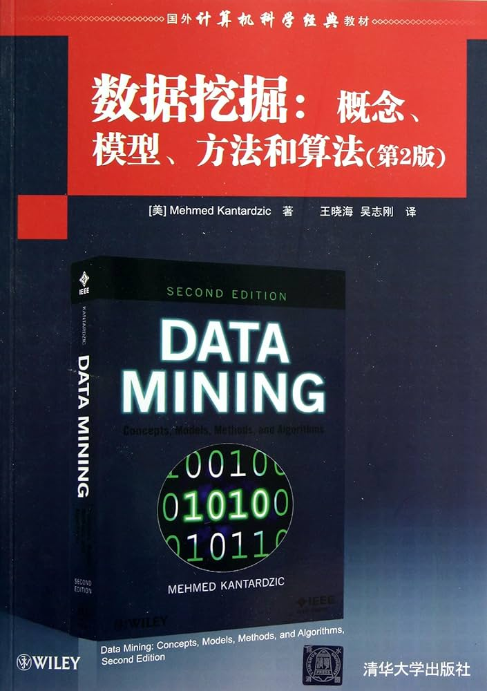

📖《数据挖掘：概念、模型、方法和算法》是数据挖掘领域的综合性教材，系统介绍数据挖掘的核心概念、主要模型和常用算法，理论与实践并重。
数据预处理——数据清洗、特征选择、降维等技术。
分类——决策树、神经网络、支持向量机等分类算法。
聚类——K-means、层次聚类、DBSCAN 等聚类方法。
关联规则——Apriori、FP-Growth 等关联分析算法。
高级主题——Web 挖掘、文本挖掘、时序数据分析等。
这本书基本囊括了数据挖掘领域的核心知识——从分类、聚类到关联规则挖掘，从决策树到神经网络，覆盖了机器学习从业者需要掌握的大部分基础算法。每章既有理论讲解，也有实际案例，理论与实践的结合做得不错。
作为入门教材，它的覆盖面足够广，结构也很清晰。虽然现在有了更多时髦的深度学习书籍，但数据挖掘的基础知识依然重要——毕竟不是所有问题都需要神经网络来解决。对于想要系统了解机器学习经典算法的人来说，这是一本很好的起点，也是值得保留在书架上的参考书。